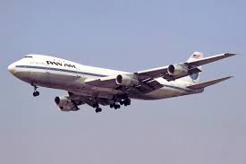
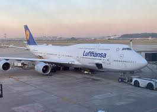

Boeing 747, známy ako "Jumbo Jet", je jedným z najvýznamnejších komerčných lietadiel v histórii letectva. Toto širokoturupové lietadlo, vyvinuté spoločnosťou Boeing Commercial Airplanes koncom 60. rokov, spôsobilo revolúciu v komerčnom letectve a stalo sa symbolom globálneho cestovania. Prvý let Boeingu 747 sa uskutočnil 9. februára 1969 a komerčná prevádzka sa začala v roku 1970 s leteckou spoločnosťou Pan American World Airways. Lietadlo bolo vyvinuté pod vedením legendárneho inžiniera Joea Suttera, ktorý je často označovaný ako "otec 747". Charakteristický dizajn s "hrbom" v prednej časti trupu sa stal poznávacím znakom 747. Tento hrb tvorí horné poschodie lietadla a pôvodne bol určený pre kokpit, čo umožnilo vytvoriť odklopný nos pre nákladnú verziu. Horná paluba sa neskôr začala využívať aj na prepravu cestujúcich prvej triedy. Boeing 747 priniesol revolúciu v leteckej doprave. Vďaka svojej kapacite až 550 cestujúcich v závislosti od konfigurácie výrazne znížil náklady na letenky a umožnil cestovanie väčšiemu počtu ľudí. Jeho dolet presahujúci 13 000 kilometrov otvoril nové možnosti pre priame lety medzi vzdialenými destináciami. Počas svojej dlhej histórie prešiel 747 mnohými vylepšeniami a modernizáciami. Bolo vyvinutých niekoľko verzií, od pôvodného 747-100 až po najmodernejší 747-8. Každá nová verzia priniesla vylepšenia v oblasti výkonu, efektivity a komfortu pre cestujúcich.
Technické Parametre
| Parameter | Hodnota |
|---|---|
| Dĺžka | 76,3 m |
| Rozpätie krídel | 68,4 m |
| Výška | 19,4 m |
| Maximálna vzletová hmotnosť | 397 000 kg |
| Maximálna rýchlosť | 988 km/h |
| Dolet | 13 450 km |
| Kapacita paliva | 193 280 l |
| Počet cestujúcich (3 triedy) | 366 |

